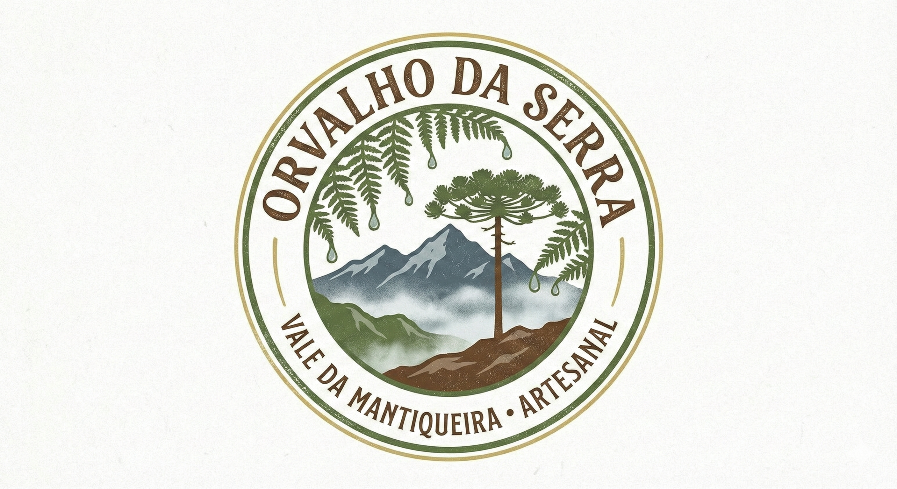

Sabores autênticos cultivados com afeto nas brumas do Vale da Mantiqueira. Uma seleção premium dos melhores queijos, méis e conservas da nossa terra.
Escaneie o QR Code ou clique para falar diretamente conosco. Preparamos o seu pedido com todo o cuidado.
Falar no WhatsApp